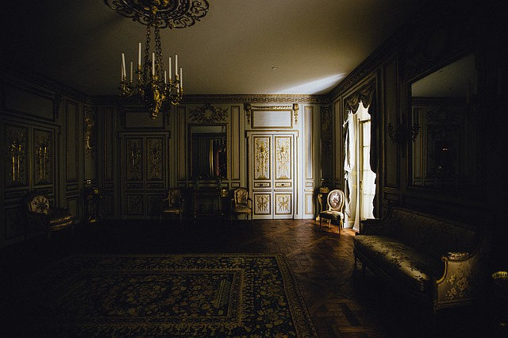

THE CHATEAU into which my valet had ventured to make forcible entrance, rather than permit me, in my desperately wounded condition, to pass a night in the open air, was one of those piles of commingled gloom and grandeur which have so long frowned among the Appennines, not less in fact than in the fancy of Mrs. Radcliffe. To all appearance it had been temporarily and very lately abandoned. We established ourselves in one of the smallest and least sumptuously furnished apartments. It lay in a remote turret of the building. Its decorations were rich, yet tattered and antique. Its walls were hung with tapestry and bedecked with manifold and multiform armorial trophies, together with an unusually great number of very spirited modern paintings in frames of rich golden arabesque. In these paintings, which depended from the walls not only in their main surfaces, but in very many nooks which the bizarre architecture of the chateau rendered necessary- in these paintings my incipient delirium, perhaps, had caused me to take deep interest; so that I bade Pedro to close the heavy shutters of the room- since it was already night- to light the tongues of a tall candelabrum which stood by the head of my bed- and to throw open far and wide the fringed curtains of black velvet which enveloped the bed itself. I wished all this done that I might resign myself, if not to sleep, at least alternately to the contemplation of these pictures, and the perusal of a small volume which had been found upon the pillow, and which purported to criticise and describe them.
Long- long I read- and devoutly, devotedly I gazed. Rapidly and gloriously the hours flew by and the deep midnight came. The position of the candelabrum displeased me, and outreaching my hand with difficulty, rather than disturb my slumbering valet, I placed it so as to throw its rays more fully upon the book.
But the action produced an effect altogether unanticipated. The rays of the numerous candles (for there were many) now fell within a niche of the room which had hitherto been thrown into deep shade by one of the bed-posts. I thus saw in vivid light a picture all unnoticed before. It was the portrait of a young girl just ripening into womanhood. I glanced at the painting hurriedly, and then closed my eyes. Why I did this was not at first apparent even to my own perception. But while my lids remained thus shut, I ran over in my mind my reason for so shutting them. It was an impulsive movement to gain time for thought- to make sure that my vision had not deceived me- to calm and subdue my fancy for a more sober and more certain gaze. In a very few moments I again looked fixedly at the painting.
That I now saw aright I could not and would not doubt; for the first flashing of the candles upon that canvas had seemed to dissipate the dreamy stupor which was stealing over my senses, and to startle me at once into waking life.
The portrait, I have already said, was that of a young girl. It was a mere head and shoulders, done in what is technically termed a vignette manner; much in the style of the favorite heads of Sully. The arms, the bosom, and even the ends of the radiant hair melted imperceptibly into the vague yet deep shadow which formed the back-ground of the whole. The frame was oval, richly gilded and filigreed in Moresque. As a thing of art nothing could be more admirable than the painting itself. But it could have been neither the execution of the work, nor the immortal beauty of the countenance, which had so suddenly and so vehemently moved me. Least of all, could it have been that my fancy, shaken from its half slumber, had mistaken the head for that of a living person. I saw at once that the peculiarities of the design, of the vignetting, and of the frame, must have instantly dispelled such idea- must have prevented even its momentary entertainment. Thinking earnestly upon these points, I remained, for an hour perhaps, half sitting, half reclining, with my vision riveted upon the portrait. At length, satisfied with the true secret of its effect, I fell back within the bed. I had found the spell of the picture in an absolute life-likeliness of expression, which, at first startling, finally confounded, subdued, and appalled me. With deep and reverent awe I replaced the candelabrum in its former position. The cause of my deep agitation being thus shut from view, I sought eagerly the volume which discussed the paintings and their histories. Turning to the number which designated the oval portrait, I there read the vague and quaint words which follow:
"She was a maiden of rarest beauty, and not more lovely than full of glee. And evil was the hour when she saw, and loved, and wedded the painter. He, passionate, studious, austere, and having already a bride in his Art; she a maiden of rarest beauty, and not more lovely than full of glee; all light and smiles, and frolicsome as the young fawn; loving and cherishing all things; hating only the Art which was her rival; dreading only the pallet and brushes and other untoward instruments which deprived her of the countenance of her lover. It was thus a terrible thing for this lady to hear the painter speak of his desire to pourtray even his young bride. But she was humble and obedient, and sat meekly for many weeks in the dark, high turret-chamber where the light dripped upon the pale canvas only from overhead. But he, the painter, took glory in his work, which went on from hour to hour, and from day to day. And be was a passionate, and wild, and moody man, who became lost in reveries; so that he would not see that the light which fell so ghastly in that lone turret withered the health and the spirits of his bride, who pined visibly to all but him. Yet she smiled on and still on, uncomplainingly, because she saw that the painter (who had high renown) took a fervid and burning pleasure in his task, and wrought day and night to depict her who so loved him, yet who grew daily more dispirited and weak. And in sooth some who beheld the portrait spoke of its resemblance in low words, as of a mighty marvel, and a proof not less of the power of the painter than of his deep love for her whom he depicted so surpassingly well. But at length, as the labor drew nearer to its conclusion, there were admitted none into the turret; for the painter had grown wild with the ardor of his work, and turned his eyes from canvas merely, even to regard the countenance of his wife. And he would not see that the tints which he spread upon the canvas were drawn from the cheeks of her who sate beside him. And when many weeks bad passed, and but little remained to do, save one brush upon the mouth and one tint upon the eye, the spirit of the lady again flickered up as the flame within the socket of the lamp. And then the brush was given, and then the tint was placed; and, for one moment, the painter stood entranced before the work which he had wrought; but in the next, while he yet gazed, he grew tremulous and very pallid, and aghast, and crying with a loud voice, 'This is indeed Life itself!' turned suddenly to regard his beloved:- She was dead!
Esta historia relata como un pintor está tan obsesionado con su pintura que llega al punto de olvidarse de su esposa, la cual al final termina con un final trágico, para mí esta historia tiene un mensaje de trasfondo, pues, creo que el mensaje que da es que muchas veces nos centramos más en otras cosas que no son tan importantes, y olvidamos las cosas que realmente lo son, hasta el punto que las dejamos morir. Este relato me pareció muy interesante.
Oscuridad, falta de luz.
Que tiene las cejas muy juntas y pobladas.
Recorren 1400 kilómetros del norte al sur de Italia y forman el eje principal de la península italiana o apenina, desde el golfo de Liguria hasta la península de Calabria.
Es un lugar destinado al descanso o al alojamiento. El concepto puede aludir a una habitación o ambiente en particular, o al edificio que se usa como hospedaje.
Que es magnífico, sumamente espléndido o lujoso en extremo.
Se denomina ajada a una salsa que lleva ajo, sal y pan y que se emplea para condimentar pescados.
Del blasón (escudo de armas) o relacionado con él.
Adorno pintado o labrado compuesto por figuras geométricas y motivos florales que se entrelazan de forma complicada y diversa; es característico de la ornamentación arquitectónica árabe.
Hueco practicado en una pared o muro, en especial el que sirve para contener una estatua, una imagen o un adorno.
Dispositivo de un motor de combustión interna donde se produce la chispa eléctrica que inflama la mezcla explosiva comprimida; contiene dos hilos separados entre los que la corriente de alto voltaje produce un arco voltaico que genera la chispa que enciende el combustible dentro del cilindro.
Adornar un vestido u otra cosa con guarniciones al canto.
Composición poética o musical trovadoresca que solía cantarse de noche.
Somnolencia o sopor intenso que a veces puede estar producido por alguna enfermedad.
Una pequeña ilustración o fotografía del retrato que se desvanece en el fondo y sin una frontera definida
Que es de filigrana o tiene sus características.
[persona] Que era descendiente de los musulmanes que continuaron habitando en la península ibérica después de la Reconquista.
Que sucede de manera repentina e inesperada.
Que se manifiesta con ímpetu, viveza o pasión.
Instrumento formado por una tira de cuero u otro material flexible que se utiliza para lanzar piedras a distancia, doblándola sobre sí misma para hacerla girar a gran velocidad y soltando a continuación una de sus puntas.
Que conlleva desgracia y causa tristeza o sufrimiento.